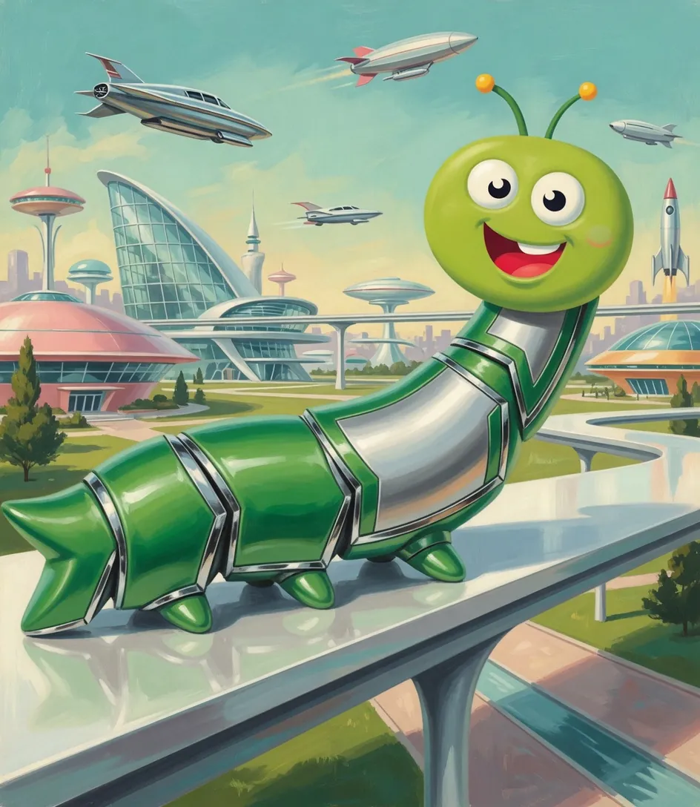

Prozessmanagement, endlich verständlich.
Für alle, die plötzlich Prozesse am Hals haben. Kurze Lektionen, Lieder und Comics, mit einem Handgriff für morgen.
- Über 10 Jahre Praxis
- Kostenlos
- Ohne Anmeldung
- Ohne Cookies

Mit KI erstelltWas nervt dich gerade?
Tipp an, was passt. Fünf Minuten Erklärung, ein Handgriff für morgen.
- Ich mache alles selbstAm Ende landet doch wieder alles auf deinem Tisch.→
- Neue brauchen ewigWer neu anfängt, fragt sich wochenlang durch.→
- Alle fragen mich dasselbeDein Telefon klingelt, und es ist wieder dieselbe Frage wie gestern.→
- Im Urlaub bricht alles zusammenKaum bist du weg, kommen die Anrufe.→
- Keiner fühlt sich zuständigAlle sind irgendwie beteiligt, aber wenn es hakt, war es niemand.→
- Aufgaben bleiben liegenJeder arbeitet fleißig, trotzdem wartet der Kunde.→
- Viel besprochen, nichts passiertDie Besprechung war gut, alle waren sich einig.→
- Derselbe Fehler passiert immer wiederIhr behebt ihn, und nächsten Monat ist er wieder da.→
- Keiner geht zur SchulungDie Einladung ist raus, der Raum gebucht, und am Ende sitzen drei Leute da.→
- Der Chef will jetzt was mit KIAuf einmal soll alles mit KI laufen.→
- Die Schuhe liegen immer überallMorgens sucht jemand den zweiten Schuh, abends stolperst du über drei Paar im Flur.→
- Wer räumt die Spülmaschine aus?Die Maschine ist fertig, aber keiner räumt aus.→
- Aufräumen dauert jedes Mal ewig„Räum dein Zimmer auf“→
- Keiner weiß, wer wann wohin mussTraining, Arzttermin, Elternabend: Alles steht in irgendeinem Kopf, nur nicht da, wo alle es sehen.→
Weiter entdecken
- LernwerkstattVom Prozesswurm zum SchmetterlingIn Stufen von A1 bis C2, mit Urkunde fürs LinkedIn-Profil.→
- Für TeamsFertige Lernpfade zum WeiterschickenZehn Minuten in der Teamrunde statt Tagesseminar.→
- Montags-Wurm · 26. Oktober 2026Viele Hüte, keiner zuständigÜber 70 Arten von Beauftragten, und wer kümmert sich wirklich? Dazu die Hutliste in drei Schritten.→
Neue Website, noch kein Schmetterling: Sag uns, was dir fehlt.